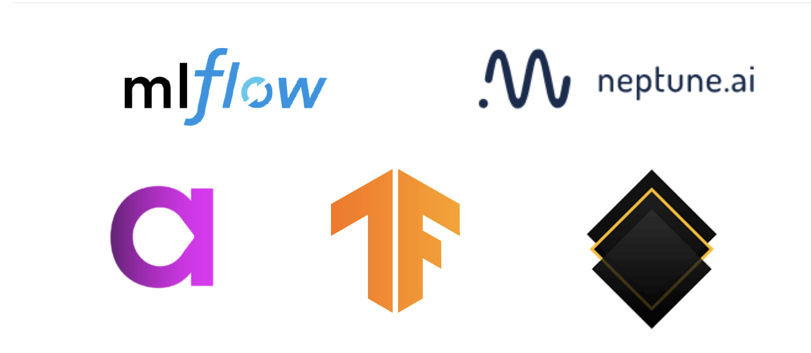

機械学習実験管理のための15のツール¶
これはneptune.aiの記事(15 Best Tools for Tracking Machine Learning Experiments, Author Pawel Kijko)の自分用翻訳です。 DeepL翻訳を多用します。

機械学習プロジェクトに取り組むにあたって、1回のモデルトレーニングの実行から良い結果を得ることと、全ての機械学習実験を整理し、それらから有効な結論を導き出すためのプロセスを持つことは全く別のことです。後者の機械学習実験管理の助けとなるツールがあります。
この記事では、データサイエンティストや機械学習エンジニアとして、機械学習実験を追跡するためのツールが必要な理由と、そのために使用できる最高のソフトウェアは何かを説明します。
機械学習実験を追跡するためのツールを誰が、なぜ必要としているのか？¶
データサイエンティスト：多くの組織では、機械学習エンジニアやデータサイエンティストは一人で仕事をする傾向があります。そのため、最後の1つのモデルを提供できる限り、実験プロセスを追跡することはそれほど重要ではないと考える人もいます。しかし、あるアイデアに戻ってきたり、数ヶ月前のモデルを再実行したり、あるいは単に実行間の違いを比較して可視化したりする場合、ML実験を追跡するためのシステムやツールの必要性が（痛いほど）明らかになります。
分析チーム：ML実験のトラッキングに特化したツールは、データサイエンティストのチーム全体にとってさらに便利です。他のメンバーが何をしているかを見たり、アイデアや洞察を共有したり、実験のメタデータを保存したり、必要なときにいつでもそれを取り出して分析したりすることができます。チームワークをより効率的にし、複数の人が同じタスクの作業する状況を防ぎ、新しいメンバーのオンボーディングをより簡単にします。
マネージャー/ビジネス：トラッキングソフトウェアは、機械学習プロジェクトのマネージャーやビジネスの利害関係者のような他のチームメンバーを巻き込む機会を作ります。ビジュアライゼーションを準備し、コメントを追加し、作業を共有する可能性のおかげで、マネージャーや同僚は簡単に進捗状況を追跡し、機械学習チームと協力することができます。
もっと詳しく知りたい方のために、実験管理についての掘り下げた記事をご紹介します。
機械学習実験の追跡に最適なツール¶
ベスト15の実験管理ツールの機能や統合性を比較しました。
この比較表の最終更新日は2020年4月29日です。一部の情報は今日では古くなっている可能性があります。誤った情報がありますか？-> 更新しますので、ご連絡ください。
15ツールの比較表¶
{%pdf https://neptune.ai/wp-content/uploads/best-machine-learning-experiment-tracking-apps.pdf %}
1.Neptune¶
Neptuneは、市販されている中で最も軽量な実験管理ツールです。あらゆるデータサイエンティストに最適なトラッキングプラットフォームです。このソフトウェアは、あなたのワークフローに簡単に統合でき、トラッキング機能を幅広く提供しています。実験を追跡、検索、分析するだけでなく、チームや管理者と共有することもできます。さらに、Neptuneは非常に柔軟性が高く、他の多くのフレームワークと連携し、安定したユーザーインターフェースのおかげで、（数百万回の実行）大きなスケーラビリティを実現しています。
2.Weights & Biases¶
Weight & Biasesは、最先端のディープラーニングチームを対象としています。実験を記録し、研究のあらゆる部分を可視化することができます。Weight & Biasesは、データサイエンティスト間のコラボレーションを促進するために作成されており、この問題に関して多くの有用な機能を提供しています。そのすべてが、よく設計されたユーザーエクスペリエンスで実現されています。
3.Comet¶
前述のツールと同様に、Cometは機械学習プロジェクトのトラッキングを可能にするために構築されました。このソフトウェアの背後にあるチームは、データサイエンティストが実験をよりよく整理し、管理できるようにすることを使命としています。Cometは、実験を簡単に比較したり、収集したデータの記録を残したり、他のチームメンバーと協力したりすることができます。
メリット¶
どのようなマシンも素早く簡単に適応
既存のMLライブラリと相性が良い
IP保護
4.Sacred + Omniboard¶
“すべての実験は神聖なものである… “とSacredのツール説明にあるように。Sacredはオープンソースのソフトウェアで、機械学習エンジニアが実験の設定、整理、ログの記録、再現を行うことができます。SacredにはきちんとしたUIは付属していませんが、OmniboardやSacredboard、Neptuneなどのダッシュボードツールがいくつか用意されていて、そこに接続して使うことができます。また、これまでのツールのようなスケーラビリティはなく、チームでの共同作業には適応されていませんが、個人での研究となると大きな可能性を秘めています。
5.MLflow¶
MLflowは、機械学習のライフサイクル全体を管理するのに役立つオープンソースのプラットフォームです。これには実験だけでなく、再現性やデプロイメントも含まれます。これらの3つの要素をそれぞれ1つのMLflowコンポーネントで表現しています。トラッキング、プロジェクト、モデル。つまり、MLflowで作業するデータサイエンティストは、実験を追跡し、それを整理し、他のMLエンジニアのためにそれを記述し、機械学習モデルに詰め込むことができるということです。一人から大きな組織へのスケーラビリティを可能にするように設計されていますが、個人ユーザーには最適に機能します。
メリット¶
機械学習プロセスのライフサイクル全体に焦点を当てている
多くの追加ツールやプラットフォームとの互換性
あらゆるMLライブラリや言語と統合されたオープンなインターフェース
比較記事 MLflow and Neptune
6.TensorBoard¶
TensorBoardは、もう一つの実験トラッキングツールです。これはオープンソースで、機械学習モデルの可視化とデバッグのためのツール群を提供しています。TensorBoardは市場で最も人気のあるソリューションであるため、他の多くのツールやアプリケーションと広く統合されています。さらに、このソフトウェアを使用しているエンジニアの広範なネットワークがあり、彼らの経験やアイデアを共有しています。これは、あらゆる問題を解決する準備ができている強力なコミュニティになります。ソフトウェアは、しかし、それ自体は、最高の個人ユーザーのために適しています。
メリット¶
事前い構築されたトラッキングツールの大規模なライブラリ
他の多くのツールやアプリケーションとの統合
問題解決のための資料とコミュニティ
7.Guild AI¶
Guild AIの背後にあるチームは、”実験をより早く、より効果的に適用することができれば、作業をより早く完了させることができる “と述べています。このプロセスをうまく整理するために、彼らは個々のプロジェクトに最適なオープンソースの実験追跡ソフトウェアを作成しました。軽量で、多くの便利な機能を備えており、機械学習実験の実行、分析、最適化、再現を容易にしてくれます。さらに、Guild AIには様々な分析ツールが含まれており、実験の比較プロセスをより簡単にすることができます。
8.Polyaxon¶
Polyaxonは、機械学習プロジェクトのライフサイクル全体の管理と、MLチームのコラボレーションを促進することの両方に焦点を当てたプラットフォームです。実験のトラッキングや最適化からモデル管理、法規制への対応まで、幅広い機能を備えています。その開発者の主な目標は、コストを節約しながら結果と生産性を最大化することです。ただし、Polyaxonを使用するには、事前にインフラ/クラウドに統合する必要があります。
メリット¶
最も一般的な深層学習フレームワークやMLライブラリとの統合
データサイエンティスト、チームリーダー、アーキテクトなどのグループに対応できるような設計
チームコラボレーションが可能
比較記事 Polyaxon and Neptune
9.Trains¶
Trainsは、その作成者が述べているように、「本番レベルのディープラーニングモデルを訓練するという「栄光に満ちた、しかし厄介なプロセス」を追跡するために構築されました。このソフトウェアの主な焦点は、機械学習やディープラーニングの実験を楽に、かつ効果的な方法で追跡できるようにすることです。Trainsはオープンソースのプラットフォームで、まだベータ段階ですが、常に開発とアップグレードが行われています。
メリット¶
迅速かつ簡単な導入プロセス
チームコラボレーションを後押しすることが可能
実験プロセスを追跡し、データを1つの集中サーバーに保存するために設計された機能
10.Valohai¶
Valohaiはデータサイエンティストを念頭に置いて設計されており、その主な利点はモデル構築プロセスを高速化することです。大規模な自動化を行いますが、まずはインフラ/プライベートクラウドと統合する必要があります。Valohaiは、あらゆる言語やフレームワークに対応しているだけでなく、多くの異なるツールやアプリにも対応しています。また、チームワークを重視したソフトウェアであり、それを促進する多くの機能を備えています。
メリット¶
モデル構築プロセスを大幅に加速する
親切なカスタマーサービスと月1回のチェックアップ
機械学習のライフサイクル全体にフォーカス
11.Pachyderm¶
Pachydermは、ユーザーがエンドツーエンドの機械学習サイクルを制御することを可能にするツールです。データの系統から、実験の構築やトラッキング、スケーラビリティのオプションに至るまで、Pachydermではすべてがカバーされています。ソフトウェアには3つの異なるバージョンがあり、Community Edition（オープンソース、どこでも使用可能）、Enterprise Edition（完全なバージョン管理されたプラットフォーム）、Hub Edition（前の2つのバージョンの特徴を組み合わせた、まだベータ版）があります。インフラ/プライベートクラウドとの統合が必要なため、前に述べた他のツールほど軽量ではありません。
メリット¶
お客様のニーズに合わせてソフトウェアのバージョンを変更することができる
エンドツーエンドのプロセスサポート
設立され、専門家の強力なコミュニティに支えられている
12.Kubeflow¶
Kubeflowは、ランオーケストレーションと機械学習ワークフローのデプロイを容易にすることを主な目的としたソフトウェアです。Kubernetes用の機械学習ツールキットとして知られており、Kubernetesのポテンシャルを利用して機械学習モデルのスケーリングを容易にすることを目的としています。Kubeflowの背後にあるチームは常に機能を開発しており、データサイエンティストの生活を楽にするために最善を尽くしている。トラッキング機能はいくつかあるが、プロジェクトのメインではない。補完的なツールとして、このリストの他のツールと簡単に併用することができます。
13.Verta.ai¶
Vertaの主な機能は、4つの言葉で要約することができます：トラック、コラボレーション、デプロイ、モニター。ご覧のように、このソフトウェアは機械学習のライフサイクル全体の管理を容易にするために作られています。そして、プロセスの各段階でMLチームを支援するために必要なツールを備えています。しかし、様々な機能を備えているため、プラットフォームがより複雑になり、我々が言及している他のオプションほど軽量化されていません。
メリット¶
他のMLフレームワークとの互換性
エンドツーエンドの機械学習プロセスの支援
ユーザーフレンドリーなデザイン
14.SageMaker Srudio¶
SageMaker Studioは、データサイエンティストが機械学習のライフサイクル全体を管理できるAmazonのツールです。MLモデルの構築やトレーニングからデプロイまで。このソフトウェアの背後にあるアイデアは、高品質の実験を開発するために、より簡単に、より時間をかけずに開発できるようにすることです。ウェブベースのツールで、データサイエンティストのパフォーマンス向上を支援するために設計されたツールセット全体が付属しています。
15.DVC¶
最後のプロジェクトは、機械学習プロジェクトのために特別に作成されたオープンソースのバージョン管理システムです。その目的は、データサイエンティストがMLモデルを共有し、再現性のあるものにすることです。DVCのユーザーインターフェースは、大量のデータのバージョン管理と組織化に対応し、よく組織化されたアクセス可能な方法でデータを保存することができます。データとパイプラインのバージョニングと管理に焦点を当てていますが、実験の追跡機能をいくつか（限定的に）持っています。補完的なツールとして、このリストの他のツールと簡単に併用することができます。
結論¶
機械学習の実験を追跡することは、MLの開発プロセスにおいて常に重要な要素となっていますが、過去にはデータサイエンティストの努力が必要とされていました。トラッキングツールが限られていたため、手作業での作業となり、時間がかかっていました。
このため、データサイエンティストやエンジニアは、機械学習ライフサイクルのこの部分を軽視したり、自作のソリューションを作成したりすることが多かった。しかし、もうそうではないはずです。
ここ数年で、機械学習実験を追跡するためのツールは大きく成熟し、非常にアクセスしやすく使いやすいものになりました。今日リストアップしたアプリやプラットフォームは、その最たる例だ。うまくいけば、すべてのデータサイエンティストがここで自分の人生を楽にしてくれるソフトウェアを見つけることができるだろう。